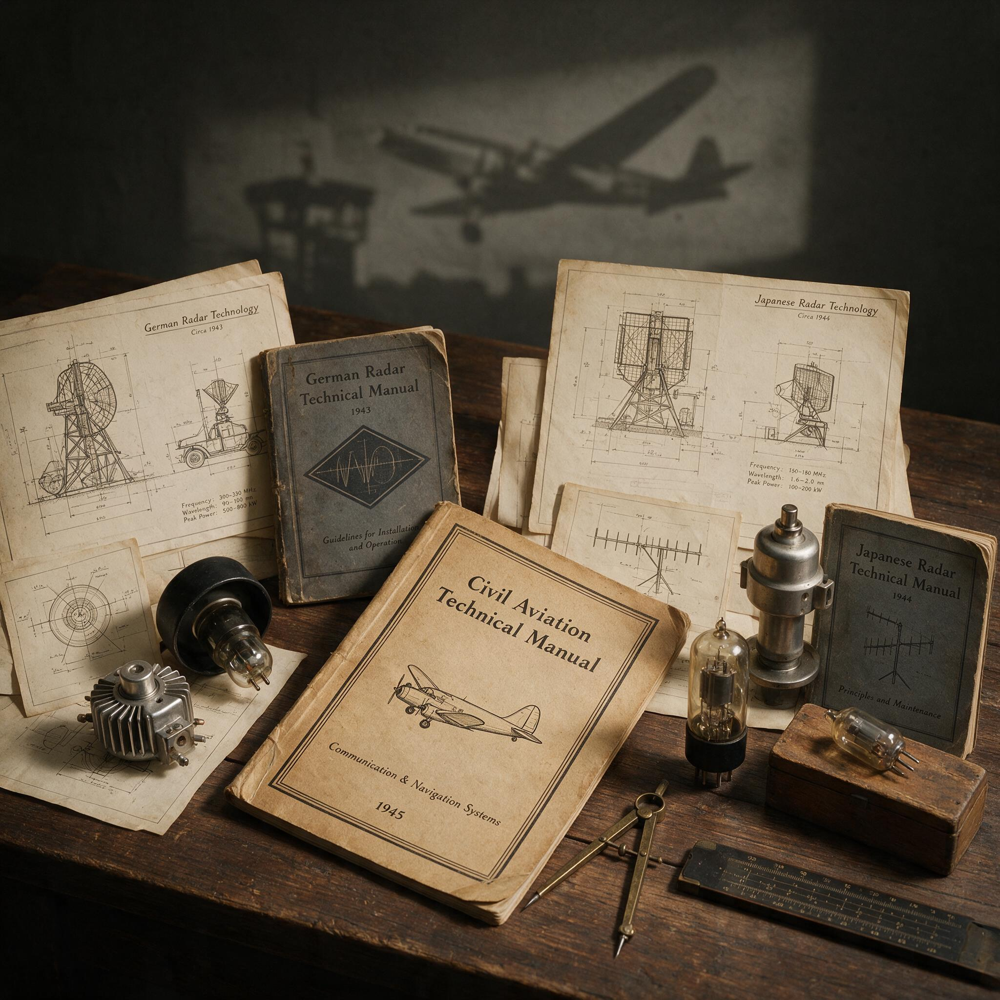

第 17 章
从战机到客机
雷达在战时已不难制造。战争结束之后，真正的困难才浮出来：卖给谁、怎么用。
西电公司的工程师拆开战时雷达图纸封套时，面对着一头双面兽。图纸锁着一条完整技术体系：高功率脉冲发射管在微秒间释放数百千瓦能量；超灵敏微波接收器从噪声中捡出微弱回波；精密天线伺服把数吨重的抛物面天线控制到弧秒级精度；平面位置显示器将电磁世界画成光点地图；整机系统集成让成千上万个元件在恶劣环境中稳定工作。

仓库里是另一番景象：上万台整机找不到销路。五年前，这些东西还锁在保密柜里；如今，连一张提货单都收不到。战争结束后六十天，美国军用雷达采购合同砍掉九成以上。海军取消SO型海面搜索雷达合同。陆军航空军不再订购SCR-584。
西电工程师手攥的技术体系仍然先进，却失去了旧日宿主。难题在于能否找到新的宿主。RCA公司率先给出了答案。1946年，RCA推出号称“海上之眼”的第一部商用船用雷达。
见过海军SO型雷达的人一眼就能认出它的血统：同样的三厘米波段，同样的旋转天线，同样的平面位置显示器，区别几乎只在于外壳从军灰色换成浅灰白，操作面板上少了几排加密开关。产品宣传册写得自信满满：雷达能让商船在浓雾中安全航行，在黑夜中避开冰山，在拥挤航道里识别远处船只。这些描述没有一句是错的。战时SO型雷达确实在北大西洋护航战中证明过这些能力，它能在完全无光的夜晚发现上浮的U艇指挥塔，能在大雾中追踪编队里的友舰。但商船不是军舰。
第一批发给商船公司的雷达在安装后的头几个月里遭遇了冷遇。船舵房没有专门的雷达官，值班大副可能只受过两小时操作培训。商船供电系统不像军舰那样有恒压恒频保障，雷达接收机灵敏度会随着主机转速波动而漂移。商船也没有恒温恒湿的设备舱，海上盐雾水汽渗进波导管，几天后屏幕上只剩一片模糊杂波。
RCA工程师在战时从没想过这些问题。军舰有专门维修兵，有备件库，有定期保养制度。商船轮机长只会修柴油机，看不懂接收机电路图。
最致命的障碍不在硬件，而在信任。船长们看着屏幕上那些幽灵般游移的绿色光点，第一个反应是不相信。他们靠了几十年航海经验，靠肉眼瞭望、罗盘和海图、雾角听声辨位，凭什么相信一只嗡嗡作响的电子盒子能看见自己看不见的东西？早期商船雷达说明书里，RCA不得不用整整一章解释“什么是雷达”，再用另一章安抚船长：雷达不会干扰六分仪和无线电罗盘，不会取代瞭望台，它只是“辅助手段”。
这份措辞谨慎的说明书本身就暴露了问题核心：一项为战争而生的技术，在和平年代需要重新证明自己存在的理由。证明来得很快，但从来不是来自技术本身的优越性，而是一桩桩事故。1947年1月，北大西洋航线上的“斯托克霍姆”号与“德里”号在浓雾中相撞。
两艘船都在以经济航速行驶，雾号按规定鸣响，瞭望台配了双岗，但雾实在太浓，等肉眼看见对方船影时已经来不及了。调查委员会在事后报告中写道，如果当时任何一艘船装备了雷达，这场事故“几乎肯定可以避免”。这句话被RCA印在下一代宣传册封面上。
1952年7月25日，意大利邮轮“安德烈亚·多里亚”号与瑞典邮轮“斯德哥尔摩”号在新英格兰外海相撞。这次事故震动了整个航运业。两艘船都装备了雷达，但“安德烈亚·多里亚”号的雷达官误判了对方航向，“斯德哥尔摩”号的雷达官高估了两船安全距离。
事故调查持续数月，最终报告里写满了关于雷达操作培训、显示界面标准化和值班制度的建议。五十一人死于那场碰撞，而它本来不该发生。不是因为雷达不够好，而是因为两艘船都在用各自的方式解读屏幕上那些光点，没有统一规则告诉他们在什么情况下该做什么。
“安德烈亚·多里亚”号沉没后，政府间海事协商组织开始推动一项漫长立法进程。1954年，第一版《国际海上避碰规则》修订案加入雷达使用条款。1960年，新规则要求一定吨位以上的商船强制装备雷达。1974年，规则再次修订，将雷达操作培训纳入船员发证标准。
从1946年RCA推出第一部商用雷达，到第一部真正有约束力的国际规则生效，用了将近三十年。
这三十年间，每一次规则修订几乎都对应着一场重大海难。技术进入了船长的舵房，但制度才知道怎么把它变成安全保障。这不是技术扩散的失败，而是技术扩散的常态。
雷达从军舰走向商船，走的不是一条技术优越性自我证明的坦途，而是一条由事故、调查、听证、立法铺成的崎岖路。每一桩海难都像一面镜子，照出技术本身解决不了的问题：谁来操作？怎么培训？如何标准化？谁为错误负责？
RCA工程师在1946年没能回答这些问题，甚至没意识到这些问题的存在。战争教会了他们如何造出最好的雷达，但没教会他们如何把雷达卖给一个不需要打仗的世界。就在商船雷达在事故与法规的夹缝中艰难推行时，另一条同样从战时雷达技术中生长出来的器物链走了一条完全不同的路。
这条路的起点是一群飞行员在战时偶然发现的“麻烦”。1944年夏天，陆军航空军第八航空队的B-17轰炸机群飞越德国上空时，机载H2X雷达屏幕上出现一片奇怪亮斑。
操作员起初以为是地面干扰，但亮斑随着飞机移动，高度回波读数显示它不是地面目标，而是飘在空中的什么东西。很快，飞行员们学会了识别这些“杂波”：它们出现在暴风雨云前方，在雷暴上空格外强烈，屏幕上的形状像一团不断膨胀的棉花。厘米波雷达的波长足够短，短到能被雨滴和冰晶散射回来。这个物理特性在战时是个麻烦，因为它会遮蔽云层下方城市的回波信号，让瞄准点变得模糊。
但战争结束后，这个麻烦变成了金矿。1945年秋天，麻省理工学院辐射实验室的几位气象学家——战时被征召来研究雷达大气干扰问题——回到了大学。
他们带回了成箱观测记录：数以千计的雷达屏幕上，暴雨云回波的形状、强度、移动速度全被仔细标注在网格纸上。战时气象学研究主要靠地面观测站和探空气球，能看到的只是大气在某个点上的切片，而雷达回波记录的是一整片风暴在三维空间里的实时剖面。这是人类第一次能“看见”风暴内部结构。1947年春天，伊利诺伊州水利调查局的水文工程师们遇到了一个实际难题。
他们需要追踪一场暴雨的精确移动路径，以便估算洪水汇入河流的时间和水量。传统雨量站网只能在地面测量降水，等暴雨经过时记录下多少毫米雨量，但暴雨在移动过程中会增强还是减弱，降雨带会在哪里转向，这些都只能靠猜。局里一位工程师知道，战争结束后军用剩余物资仓库里堆满了雷达。
他开出采购单，买下一部退役海军SG型海面搜索雷达，三厘米波段，天线可以旋转扫描，正是飞行员在战时发现云层回波的那种型号。他们把雷达架设在伊利诺伊州中部一座小山丘上，天线对准的不是海面，而是天空。
那年夏天，他们等来了一场暴雨。雷达屏幕上的画面超出了所有人预期。暴雨云内核在屏幕上显示为一团明亮回波，亮度远高于周围层云。回波边缘不断扩展，中心区域出现一个钩状结构——后来气象学家才确认，这是龙卷风前兆特征。操作员每隔十五分钟拍下一张屏幕照片，冲印后按时间顺序排列，暴雨的移动路径、强度变化、内部结构第一次被完整记录在案。
这份观测报告在1948年发表，标题平淡无奇：《用雷达观测降水》，但它开创了一个全新学科：雷达气象学。从1947年到1950年代中期，美国气象雷达网络以惊人速度铺开。驱动它的不是科学好奇心，而是另一场灾难。1953年6月，一场龙卷风袭击马萨诸塞州伍斯特，九十四人死亡。国会为此拨款，要求气象局建立全国性风暴预警系统。雷达成了这个系统的核心。到1957年，美国本土已经部署了六十六部气象雷达，覆盖所有主要人口聚居区。
但气象雷达与商船雷达的命运在这里出现了分野。商船雷达推广靠事故驱动被动立法，每一部雷达上船都伴随着一场听证会和一份强制装备法案。
气象雷达部署则完全不同：它从一开始就被嵌入一个已有的制度框架——气象局的观测网络、预警发布机制和公众广播系统。气象学家不需要重新发明一套操作规则，只需要把雷达回波图像翻译成气象学已有语言：降水率、云顶高度、风暴移动速度。雷达为气象学提供了新的感知手段，但气象学用自己的制度消化了它。
这种分野比任何技术对比都更能说明问题。同样三厘米波雷达，同样磁控管发射机，同样平面位置显示器，在航运业和气象学中长成了两种完全不同器官。
在航运业，它遇到一个没有雷达传统的制度真空。船长、航运公司、保险公司、海事法规，没有一个已经为雷达准备好位置。制度不得不在事故之后艰难生长，每一步都慢于技术扩散速度。
在气象学，它遇到一个已经成熟的研究范式：观测、记录、建模、预报。雷达只需要被塞进这个框架的输入端，气象学家知道怎么用它。
这甚至不是谁的错。航运业的制度真空来自一个简单事实：雷达出现之前，人类在海上航行了几千年，从没有过能穿透浓雾直视前方的手段。航海术全部传统——六分仪、罗盘、海图、雾号、瞭望台——都建立在“看不见就没法反应”的前提上。雷达打破了这个前提，但船长们的大脑里没有为它预留接口。他们需要几十年时间，需要足够多海难，需要一代受过雷达培训的年轻军官逐步取代老船长，才能把屏幕上那些绿色光点真正融入航海直觉。气象学的情况刚好相反。
在RCA启动商用计划之前，军方库存已经先一步决定了这条路的起点。海军剩余物资管理局的仓库里，SO型雷达整机每台作价不到战时合同价的十分之一，仍无人问津。RCA的商用计划就建立在这批廉价库存上。工程师把海军铭牌撬掉，换上“Radiomarine”铜牌，把舰用电源输入改成商船电源系统，给旋转天线加上防盐雾罩。真正的改动不多，因为RCA赌的是航运公司愿意为“看得见雾”支付溢价。可这个赌注一开始就押错了对象：买得起雷达的是船东，每天在驾驶台面对屏幕的却是船长和值班大副。船东不会亲自在雾里撞船，船长也不会因为一台设备改变操船习惯。
早期交付记录显示，至少有十几艘船的雷达在出海一次后就被断开电源。船长在航海日志里抱怨屏幕“像大雨落在天窗上”，或者干脆把它当无线电测向仪用。RCA派出的服务工程师经常发现，天线旋转电机被值班水手拧松，因为声音太吵；显示器亮度过高，夜里破坏暗适应；波导管接口被涂上普通牛油，导致微波衰减。这些问题在军舰上不会出现，因为军舰有士官长和维修手册。商船上唯一的维护者往往是大副，手边是柴油机备件和缆绳，不是示波器和波长计。RCA起初随每台雷达附送的操作手册只有薄薄几页；到1949年，手册已变成一厚本教科书，外加一箱教学幻灯片。可没有一家航运公司会放船员脱产一周学雷达。
1947年1月的那场雾中碰撞，后来被RCA包装成命运般的广告，但事故调查的原始卷宗远没有宣传册那么干净。调查委员会传唤了两船的船长、值班员和瞭望手，逐条核对雾中航行规则。他们问的不是“雷达能否避免”，而是“如果装了雷达，谁会负责盯着它”。这个问题让航运公司的安全官员无法回答，因为国际避碰规则里根本没有雷达的位置：规则写的是“保持正规瞭望”，而正规瞭望几百年来只意味着肉眼和听觉。雷达即使装在船上，在法律上只是一个“视觉辅助”，就像一副望远镜。
调查委员会在建议栏里写下的措辞相当克制，只要求“考虑安装雷达”。RCA把这句话印在宣传册封面上，却省略了后面的那半句：船员必须经过正式训练，港口必须建立维护能力。
1952年“安德烈亚·多里亚”号的碰撞让这层法律真空彻底暴露。两艘船都有雷达，但两部雷达的显示器比例尺不同，一个用五英里量程，一个用十五英里量程；两名雷达官对光点靠近速度的读法也不一致。事故听证会上，双方都引用同一段雷达影像，却推出完全相反的操船决定。调查员不得不在报告里承认：雷达提供的信息越多，没有统一显示标准和操作程序的后果越严重。这一发现没有否定雷达，反而把压力从机制上转移到规则上。政府间海事协商组织后续讨论的，已经不再是“要不要强制雷达”，而是“如何让雷达从设备变成程序”。这意味着法律不仅要规定船上装什么，还要规定驾驶台里谁看、怎么练、看错了怎么办。
海事保险业很快加进了这层压力。早期的商船保险条款里没有雷达折扣，但碰撞事故后的理赔计算开始把雷达装配与否列入风险评估表。航运公司最初抗拒雷达，一部分来自成本：一台商船雷达的价格接近舵房全部航海仪器总和，而它带来的保险费减额要多年后才体现。海难之后，这个逻辑倒了过来。没有雷达的船被列为高风险船舶，保险费率上浮，船东才不得不跟进。制度没有等到船长们真正信任屏幕上的光点，就先让账单替他们做出了决定。
与此同时，伊利诺伊水利调查局的那张采购单在另一个制度轨道上几乎没遇到阻力。采购单金额不高，包含天线、发射机和显示器，却不含安装。工程师们用木杆架起天线，借来一台示波器校准接收机，用油毡围住显示器挡风。他们没有写新的操作规则，因为观测规范可以直接套用雨量站的记录习惯：每隔十五分钟拍照，记录回波位置、范围、强度，事后与自记雨量计对照。战时飞行员那些被标为“杂波”的观测记录，在这里重新分类为“降水回波”。RCA推销商船雷达时，需要先从零开始解释什么是电子扫描线；伊利诺伊州的工程师们不需要，他们已经在雨量计图纸上为天空留好了坐标。
1948年那份《用雷达观测降水》的报告，在气象学界引起的震动也远比在航运界小。它没有带来一场立法，只带来一连串借调、复制和采购。气象局从陆军剩余物资中挑选了几部同型号雷达，把天线仰角从海面搜索改成天空扫描，将平面位置显示器换成扇形显示，便于单站观测云顶高度。到1950年代初，气象局的技术信函里已经把雷达回波强度分级，并开始尝试与降水率建立经验公式。这个过程中没有人要求气象学家“重新证明雷达有用”；他们只问雷达能测量哪些变量，误差有多少。因此，同一批从军舰拆下的三厘米雷达，在天气预报室里获得的信任，几乎是从第一份观测报告发表那一刻就开始了。
气象学家在雷达出现之前就已经在渴望一种能穿透云层看到内部结构的手段。探空气球只能沿垂直线上升，地面雨量站只能测到降水落地结果，飞机穿越风暴观测危险且昂贵。雷达到来填上了一个气象学早已画好的空位。它不是硬塞进陌生制度，而是嵌进等待多时的缺口。
1950年代后期，装备强制雷达的豪华邮轮安全穿行北大西洋，屏幕上那些光点终于不再被当作幽灵，而是被当作航标。芝加哥气象局预报中心的雷达屏幕上显示着三百英里外一场雷暴的剖面图，预报员据此在暴风雨到达城市之前两小时发出预警。
而在更远的太平洋上，一艘退役驱逐舰锚泊在瓜达尔卡纳尔岛外，舰上那部战时用来搜索日本飞机的SO型雷达早已锈蚀，天线被拆下来卖给了废铁商。这三幅画面之间的反差，不在于技术先进与落后，而在于技术扩散在不同制度土壤里长出的不同命运。同一部雷达，在军舰上只存活五年，在商船上挣扎三十年才被接纳，在气象台里只用了不到十年就变成不可或缺的基础设施。
决定它命运的，从来不是磁控管功率、接收机灵敏度或天线增益，而是它遇到的那个制度是否已经为它准备好了位置。而这场从战机到客机的转身才刚刚开始。雷达在航运和气象领域站稳了脚跟，但它真正改变人类感知世界的方式，还要等到它升上天空，进入每一架民航客机的机鼻，进入每一座机场塔台，进入空域管理的每一根神经。当雷达不再只是探测目标，而是变成空域秩序的基础设施时，它所引发的变革将远远超出技术本身。它最终要重新定义人类如何理解“天空”这个词。